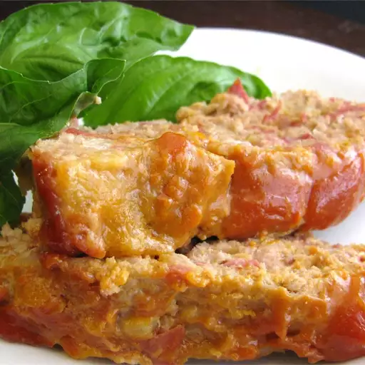

Cheeseburger

Decription
A whole heartedly prepared classic cheeseburger meatloaf using ground turkey and turkey bacon in place of beef and pork
Sizzling sweet
Ingredients
- 1 cup shredded Cheddar cheese
- 1 egg
- o.5kg ground lean turkey
- 1/2 diced and sliced onions
- 2 table spoon sauce
- 2 table spoon garclic
- 5 cliced bacons
- 1 table spoon of vegetable oil
- 1/2 tea spoon odf salt,sugar and black pepper
steps
- Preheat the oven to 350 degrees F (175 degrees C).
- Heat vegetable oil in a large skillet over medium heat. Add turkey bacon and cook until browned and crisp, about 5 minutes per side. Drain on paper towels and crumble when cool enough to handle.
- Mix ground turkey, Cheddar, egg, onion, crumbled French bread, Worcestershire sauce, garlic powder, pepper, and bacon together until well combined. Shape into a loaf in the middle of a 9x13-inch baking dish
- Stir ketchup, mustard, and brown sugar together in a bowl until brown sugar is dissolved; spread over turkey loaf.
- Bake in the preheated oven until no longer pink in the middle and the juices run clear, 45 to 60 minutes. An instant-read meat thermometer inserted into the thickest part of the loaf should read at least 165 degrees F (74 degrees C).
Home